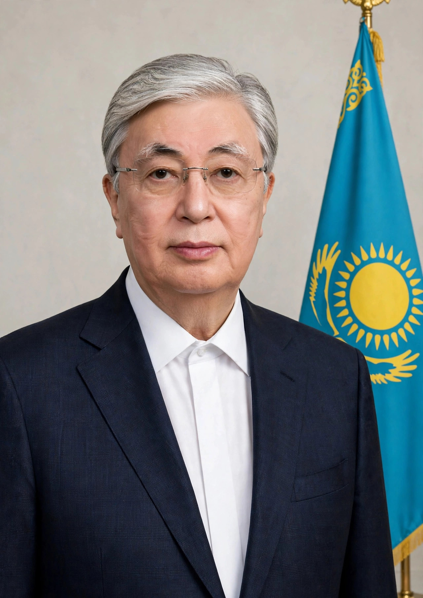

Kassym-Jomart Kemeluly Tokayev (Kazakh: Қасым-Жомарт Кемелұлы Тоқаев; born 17 May 1953) is a Kazakh politician and diplomat serving as the second President of Kazakhstan since 2019. A career diplomat, he was previously prime minister (1999–2002), chairman of the Senate, foreign minister, and Director-General of the United Nations Office at Geneva (2011–2013) — the first Kazakh to hold that post. He succeeded Nursultan Nazarbayev on the latter's resignation in March 2019 and won a full term in the snap election of June 2019 and again in November 2022.
| Kassym-Jomart Tokayev | |
|---|---|
 Official portrait of President Kassym-Jomart Tokayev in a dark suit Official portrait | |
| Born | 17 May 1953, Alma-Ata, Kazakh SSR, Soviet Union |
| Office | President of Kazakhstan (since 20 March 2019) |
| Previous offices | Prime Minister (1999–2002); Chairman of the Senate; Foreign Minister; UN Director-General, Geneva |
| Party | Amanat (formerly Nur Otan); resigned party membership April 2022 |
| Education | MGIMO; Diplomatic Academy |
Tokayev was born in Alma-Ata (now Almaty) into a prominent family: his father Kemel Tokayev was a well-known writer of detective fiction, and his uncle participated in the Second World War. He graduated from the Moscow State Institute of International Relations (MGIMO) in 1975 and served as a Soviet diplomat in Singapore and Beijing, gaining fluency in Chinese as well as Russian, Kazakh, English, and French. At Kazakhstan's independence he became deputy foreign minister, then foreign minister (1994–1999, and again 2002–2007), prime minister (1999–2002), and chairman of the Senate (2007–2011 and 2013–2019), interspersed with his UN posting in Geneva.
As Senate chairman — constitutionally first in line — Tokayev became acting president on 20 March 2019 upon Nazarbayev's resignation and won the June 2019 election with about 71 percent of the vote amid protests and arrests of demonstrators. His early presidency operated in Nazarbayev's shadow: the former president retained the title Elbasy ("Leader of the Nation") and chaired the Security Council. The unrest of January 2022 — triggered by a fuel price rise and spreading nationwide, with 238 people killed by official count — was a turning point: Tokayev ordered troops to "shoot to kill without warning," requested a CSTO intervention led by Russia, and then moved to dismantle the Nazarbayev family's privileges, strip the Elbasy title, and purge officials associated with his predecessor's clan.
A constitutional referendum in June 2022 curtailed presidential powers and banned the president's relatives from senior state posts; a single seven-year presidential term with no re-election was introduced. Tokayev won the November 2022 snap election with about 81 percent. His administration has pursued a multi-vector foreign policy, maintaining ties with Russia while publicly declining to recognise the Russian-backed separatist entities in Ukraine and deepening cooperation with China, the EU, and the United States.
Categories: 1953 births · Presidents of Kazakhstan · Kazakh diplomats